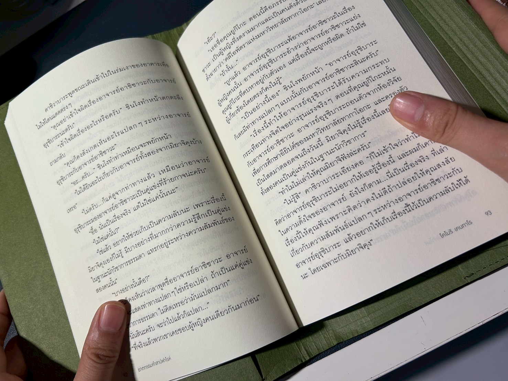
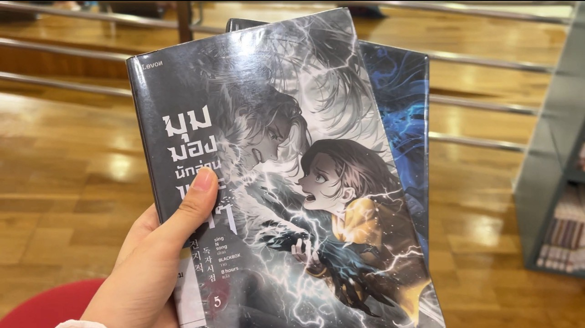

Reading books is the act of paying attention to written texts-stories, information, or ideas-by sight and contemplation of words on a page. It allows one to delve into new perspectives, learn facts, and understand emotions through characters and events. Reading sharpens the mind, enhances vocabulary, and develops critical thinking. It is not just for entertainment, but also about personal growth, reflection, and connecting with others.

My Favorite Book
I like to read many kinds of books but my most favorite genre is fantasy or romance novel.
✧ My Favorite book
"Omniscient Reader's Viewpoint," written by singNsong, was first published on January 6, 2018, and concluded on February 2, 2020. The story centers around Kim Dokja, a young office worker who has been reading a web novel titled "Three Ways to Survive in a Ruined World" for over a decade. On the day the final chapter is released, the events of the novel begin to unfold in reality, and Dokja becomes the only person aware of how the story will end. Armed with this knowledge, he embarks on a journey to change the fate of the world, facing various challenges and scenarios orchestrated by mythological beings known as dokkaebi.
I like this story because the interesting plot, realistic characters background, and the stunning artwork.
The picture below is the book that i have borrowed from TK park(a library in Central World, which I really love to go). The picture next to the book is TK park's environment.

Actual book or E-book?
✧ Do I like to read actual book or e-book?
For me, they have their own pros and cons
⋆ actual book - I like the feeling when I turn each pages but I can't really bring them outside.
⋆ e-book - It is more portable and I can read several books with only my Ipad or a e-book reader.
✧ Apps I use to read e-books!
Note: arranged from my most to least favorite.
| Apps | My opinion |
|---|---|
| Pinto | My current favorite app to read e-book. Has many thai translated books that I like |
| Meb | The first app I used to read e-books (I still like it though) |
| TK read | for borrowing e-book, it has tons of books! |
| Libby | used to borrow English books |
| Hibrary | also for borrowing e-book, and there are also many library to choose |